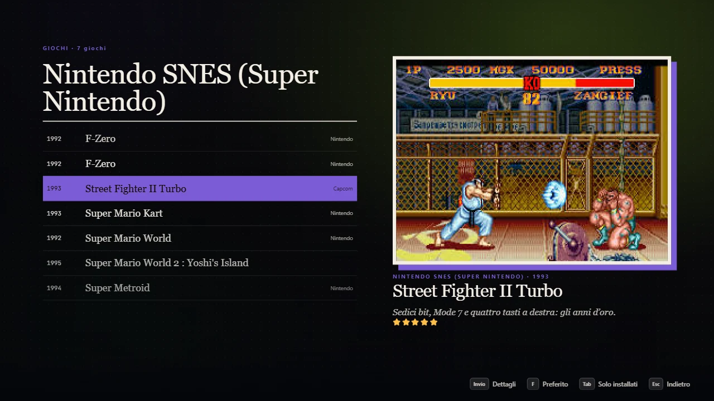

Scene: schermate che componi
Una scena è una schermata della Desktop Mode, scritta in theme.json: di cosa è fatta, e dove. L’app continua a fare il lavoro (il joypad, i giochi, giocare); la scena decide cosa c’è sullo schermo.
"scenes": {
"games": {
"elements": [
{ "type": "text", "text": "{screen.title}", "pos": [6, 11] },
{ "type": "list", "id": "games", "source": "screen", "layout": "wheel", "pos": [62, 0], "size": [34, 100] },
{ "type": "image", "of": "games", "media": "marquee", "fit": "contain", "pos": [6, 24], "size": [44, "12u"] },
{ "type": "image", "of": "games", "media": ["screenshot", "titlescreen"], "video": 1.5,
"pos": [6, 40], "size": [44, "auto"], "style": { "aspectRatio": "4 / 3" } }
]
}
}
| Scena | La schermata |
|---|---|
home, systems, favorites, journeys, search | Le sezioni della barra (journeys quando l’archivio ha un percorso videoludico) |
games | Una griglia aperta: i giochi di un sistema, tutti, quelli aggiunti per ultimi… |
game | La pagina di un gioco |
journey | Un percorso aperto: le sue tappe, ognuna giocata col gioco trovato per lei |
frame | Ciò che sta sopra ogni schermata: la barra, l’ora, i suggerimenti |
pos e size posizionano un elemento: un numero è una percentuale del riquadro in cui sta, "12u" è in unità, e va bene qualsiasi misura CSS ("calc(50% - 6u)"). origin, rotate, z, opacity e style (il CSS dell’elemento, "fontSize": "4u") fanno il resto. Senza pos un elemento scorre come lo dispone il CSS: un group con display: flex impila ciò che contiene. Gli elementi dopo sono disegnati sopra quelli prima.
Una schermata che lasci fuori è quella dell’app, scritta allo stesso modo. Un sistema può avere una scena sua (i suoi giochi, la pagina dei suoi giochi), e una variante le sue scene.

Da sapere
- La Disposizione dell’editor scrive un layout pronto per una schermata in un clic: parti da lì in theme.json.
- Ogni elemento è
.rp-elcondata-el(il suoid) e laclassche gli dai: stilalo nel tuo CSS. - F9 mostra l’id dell’elemento sotto il puntatore.